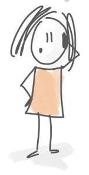

Pouvez-vous vous présenter en quelques lignes ainsi que votre parcours ?
Mérine, 32 ans logopède conventionnée depuis août 2014. Sortie de la Haute Ecole Provinciale Condorcet de Saint-Ghislain. Sortie en juin 2014, j'ai commencé ma pratique en août 2014 avec un remplacement de congé de maternité du côté de Philippeville. Ce remplacement a duré 6 mois. Ma patientèle se composait exclusivement d'enfants vus en école et au cabinet. J'ai ensuite repris un deuxième remplacement à mi-temps du côté de Heer. Cela me permettait de créer en parallèle ma propre patientèle. Ce remplacement a duré 3-4 mois. Ces deux remplacements m'ont permis également de me faire connaitre d'un côté comme de l'autre de chez moi. Après cela, j'ai été engagée dans un centre pluridisciplinaire en tant qu'indépendante. J'y suis restée +/- 3ans. En parallèle, j'ai travaillé en tant que salariée à l'école spécialisée de Marloie type1, 2 et 8 pendant 6 mois pour un remplacement de congé de maternité également. Ma patientèle au centre se composait d'enfants et d'adultes. La fermeture du centre m'a permis de créer avec la psychologue, la neuropsychologue et la psychomotricienne un nouveau centre sur Mariembourg. Le principe restait le même. Après avoir acheté ma maison, j'ai développé ma patientèle du côté de Dinant et j'ai ouvert mon cabinet privé à Morville. J'ai quitté le centre de Mariembourg en 2019 afin de prioriser les patients chez moi. Je continue, la journée, de me rendre dans les écoles et notamment à l'école spécialisée d'Omezée type 3. En février 2019, j'ai eu la chance d'être engagée à mi-temps au Centre Pms pse de Couvin. Depuis, je combine patientèle au cabinet privé et logopède au centre Pms.
